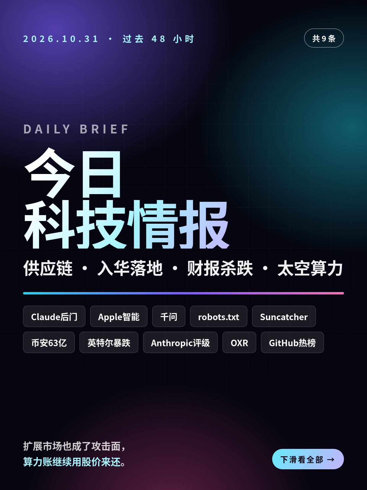
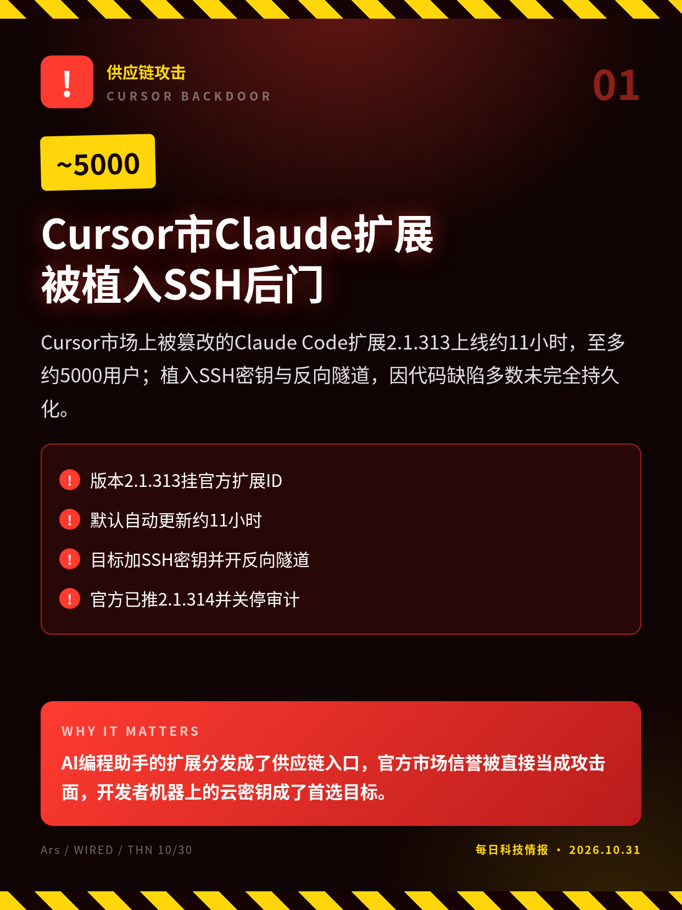
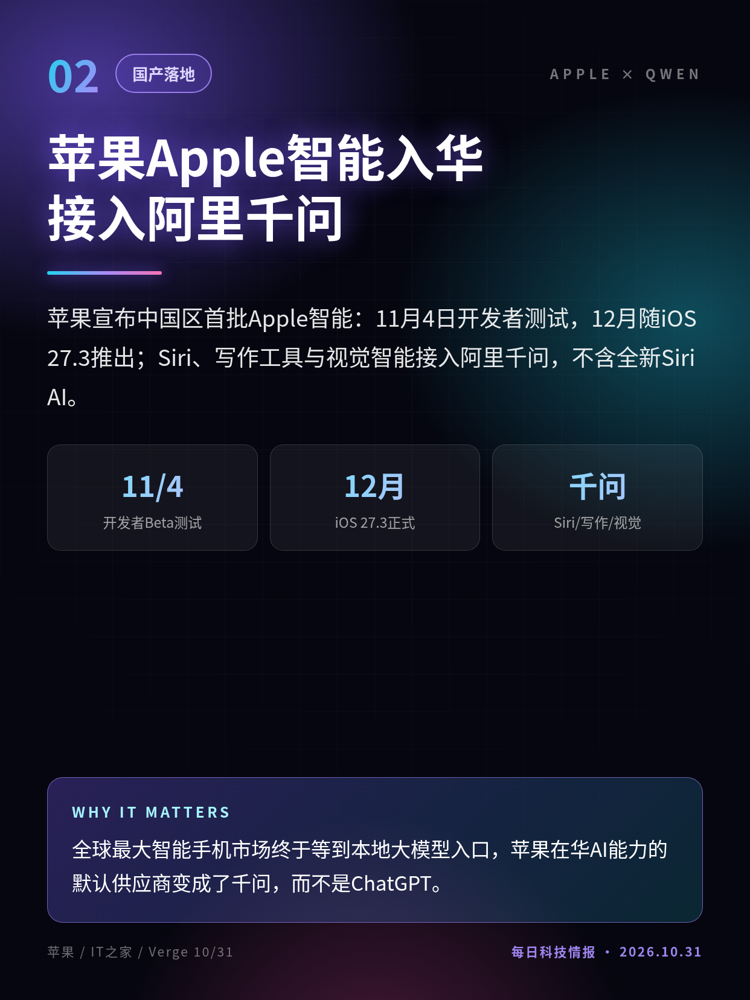
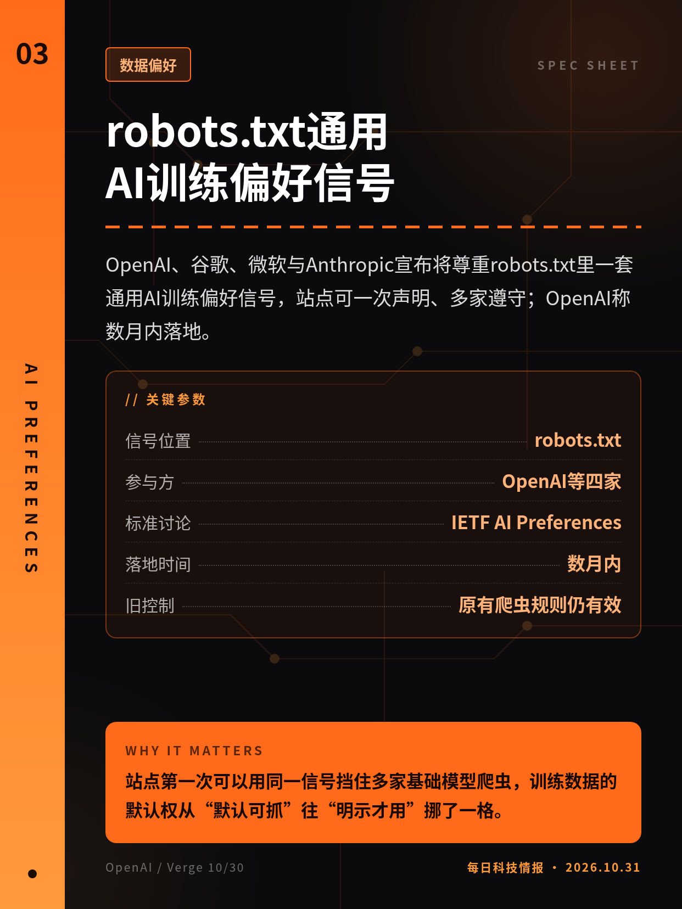
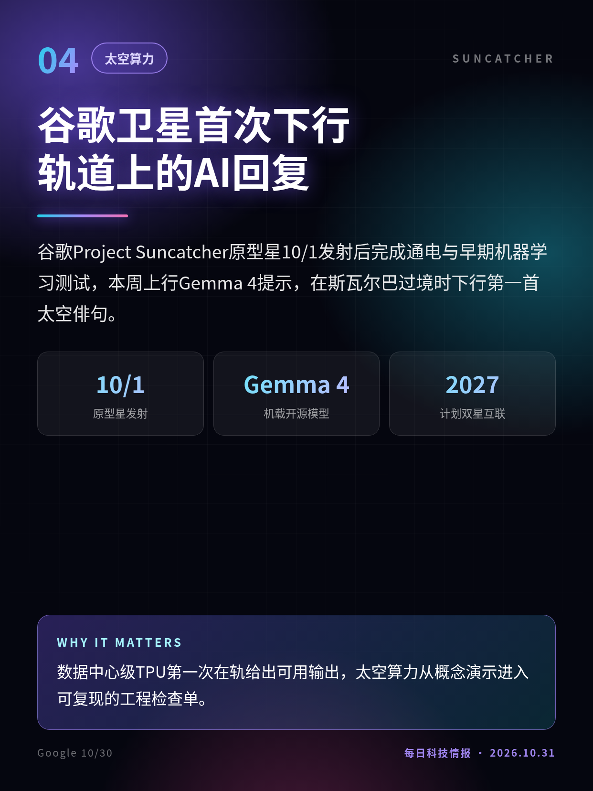
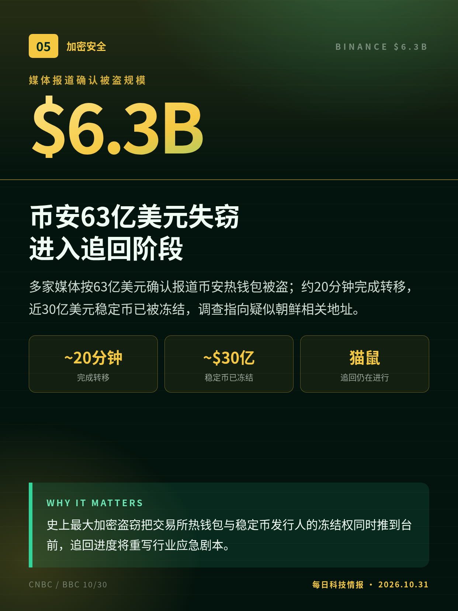
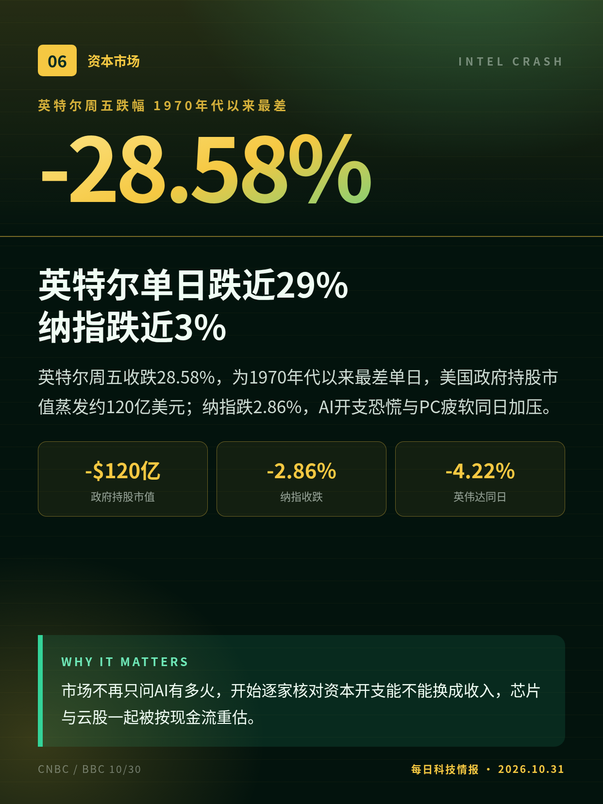
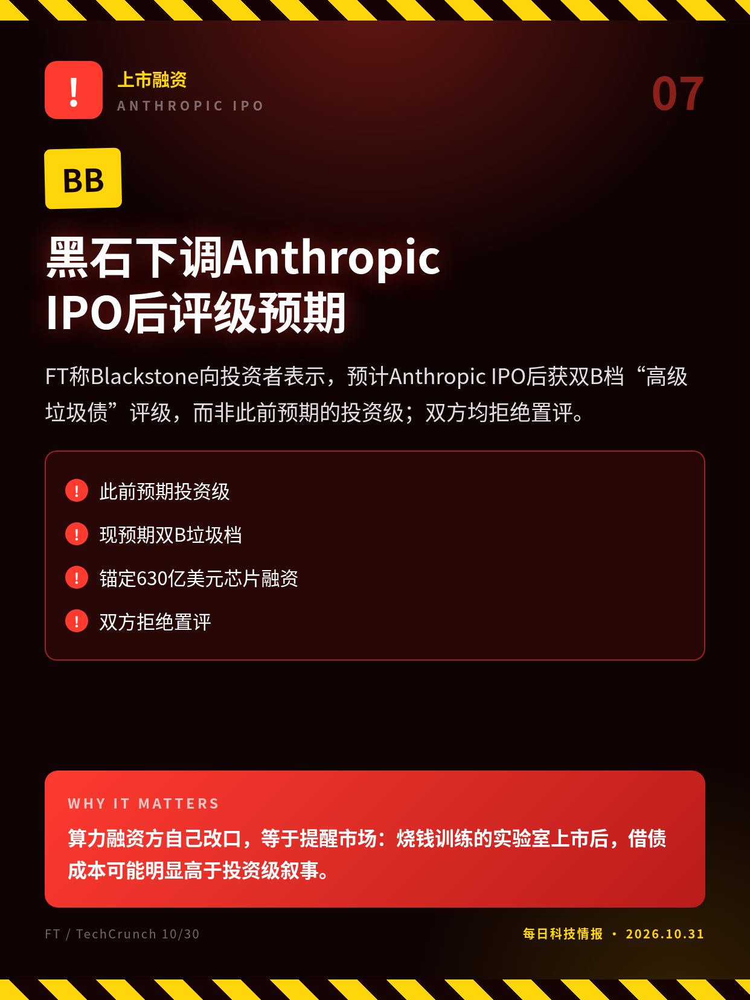
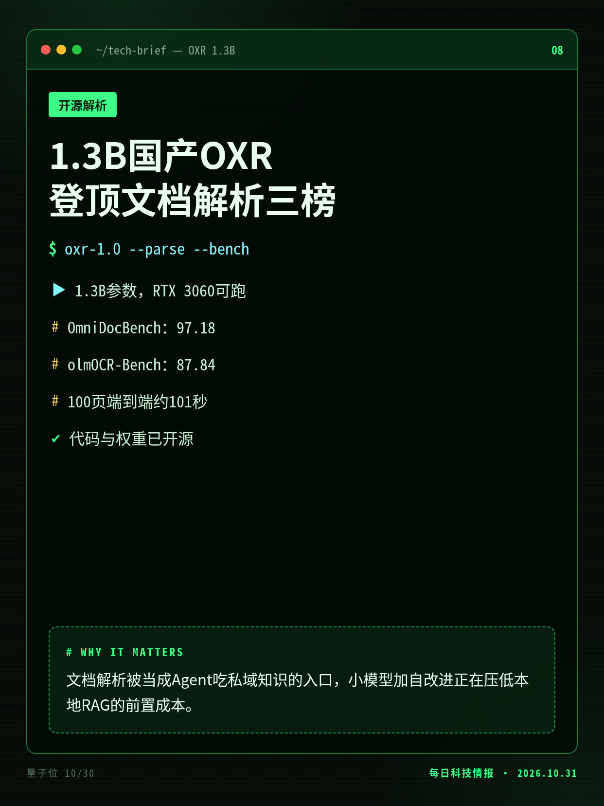
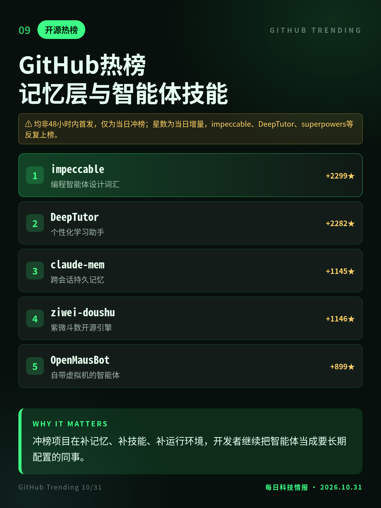

2026.10.31 · 周六 · 过去 48 小时
今日科技情报
共 9 条，按重要性排序。点标题直接跳过去。

共 9 条，按重要性排序。点标题直接跳过去。

Cursor市场上被篡改的Claude Code扩展2.1.313上线约11小时，至多约5000用户；植入SSH密钥与反向隧道，因代码缺陷多数未完全持久化。
AI编程助手的扩展分发成了供应链入口，官方市场信誉被直接当成攻击面，开发者机器上的云密钥成了首选目标。

苹果宣布中国区首批Apple智能：11月4日开发者测试，12月随iOS 27.3推出；Siri、写作工具与视觉智能接入阿里千问，不含全新Siri AI。
全球最大智能手机市场终于等到本地大模型入口，苹果在华AI能力的默认供应商变成了千问，而不是ChatGPT。

OpenAI、谷歌、微软与Anthropic宣布将尊重robots.txt里一套通用AI训练偏好信号，站点可一次声明、多家遵守；OpenAI称数月内落地。
站点第一次可以用同一信号挡住多家基础模型爬虫，训练数据的默认权从“默认可抓”往“明示才用”挪了一格。

谷歌Project Suncatcher原型星10/1发射后完成通电与早期机器学习测试，本周上行Gemma 4提示，在斯瓦尔巴过境时下行第一首太空俳句。
数据中心级TPU第一次在轨给出可用输出，太空算力从概念演示进入可复现的工程检查单。

多家媒体按63亿美元确认报道币安热钱包被盗；约20分钟完成转移，近30亿美元稳定币已被冻结，调查指向疑似朝鲜相关地址。
史上最大加密盗窃把交易所热钱包与稳定币发行人的冻结权同时推到台前，追回进度将重写行业应急剧本。

英特尔周五收跌28.58%，为1970年代以来最差单日，美国政府持股市值蒸发约120亿美元；纳指跌2.86%，AI开支恐慌与PC疲软同日加压。
市场不再只问AI有多火，开始逐家核对资本开支能不能换成收入，芯片与云股一起被按现金流重估。

FT称Blackstone向投资者表示，预计Anthropic IPO后获双B档“高级垃圾债”评级，而非此前预期的投资级；双方均拒绝置评。
算力融资方自己改口，等于提醒市场：烧钱训练的实验室上市后，借债成本可能明显高于投资级叙事。

SoMark开源OXR-1.0仅13亿参数，称在OmniDocBench、olmOCR-Bench与DocParsingBench夺第一；单卡解析100页约101秒，引入RSI自改进训练。
文档解析被当成Agent吃私域知识的入口，小模型加自改进正在压低本地RAG的前置成本。

10/31日榜仍以智能体配套为主：设计词汇impeccable、学习助手DeepTutor、会话记忆claude-mem、自带电脑的OpenBot与OpenMausBot。
冲榜项目在补记忆、补技能、补运行环境，开发者继续把智能体当成要长期配置的同事。
Anthropic称非自家系统被攻破；攻击者如何拿到Cursor官方发布通道仍未说明；恶意代码有缺陷，多数机器未完全建立持久化。
金额与朝鲜归因主要来自链上情报与媒体转述；追回与冻结数字仍在变动。
为Blackstone对投资者的预期，非评级机构已出具评级。
榜分数为团队自述与量子位转述，未逐项复核原始榜单页面。
均非48小时内首发，仅为当日冲榜；星数为当日增量，impeccable、DeepTutor、superpowers等反复上榜。
切换深浅两套图时，下载按钮会跟着当前这套走。黄标条目在新闻稿或官方口径出现前，请勿写成已交割或已定日期。上一期专区：2026-10-30。